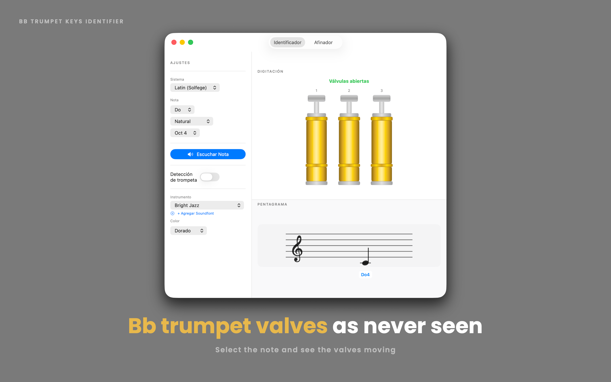
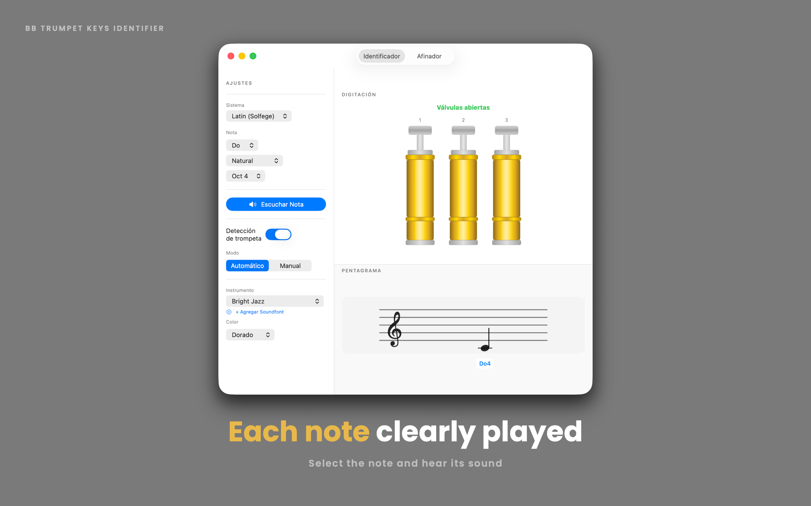
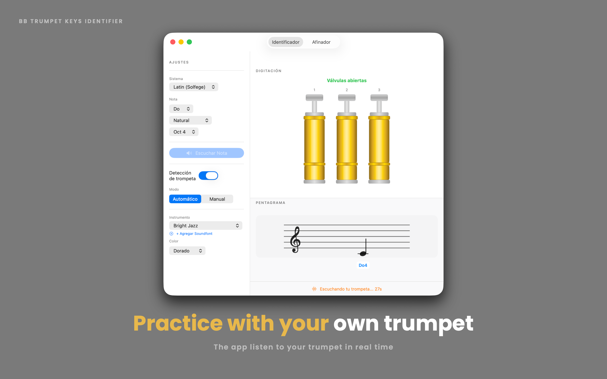
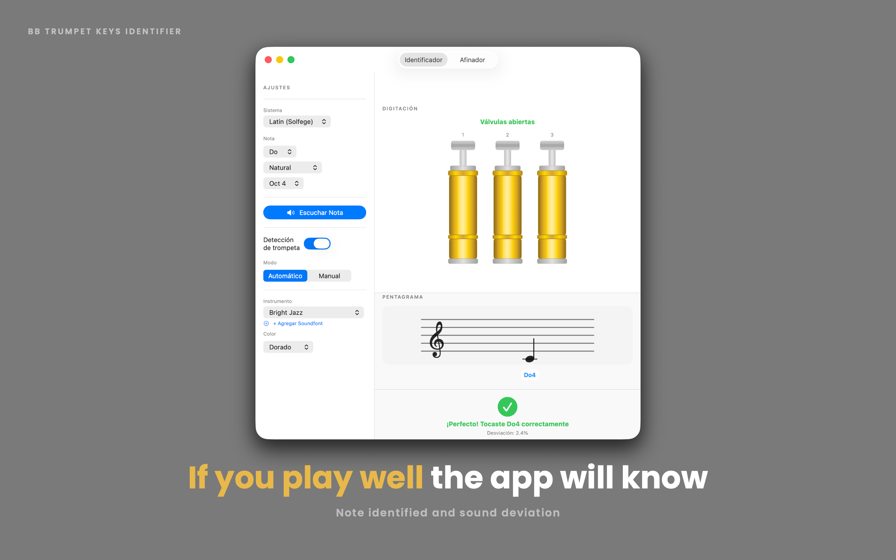
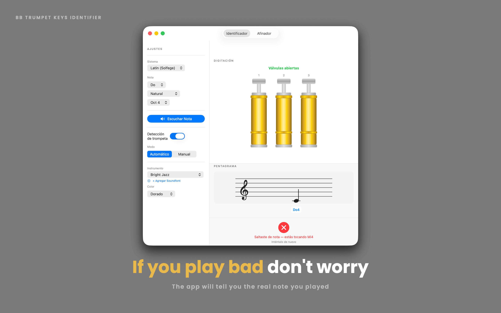
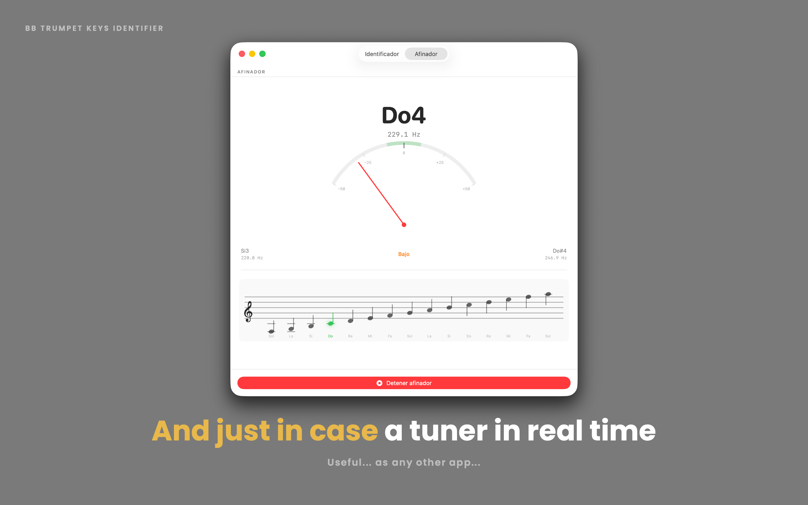

Pick a note, see the valve positions, and get instant feedback from your own mic. Practice smarter, not louder. 🎺

Built by a trumpet player, for trumpet players.
Select any note — natural, sharp, or flat — and see the exact valves to press, animated in real time, plus its position on a proper musical staff.
Play into your microphone and watch the needle respond live, with a staff view that highlights the closest note as you play.
Listen to a note, try it yourself, and let the app tell you if you're spot on, a little sharp, a little flat, or playing a different note entirely.
Switch between gold and silver valve finishes, choose from five built-in soundfonts, or import your own custom SF2 file.
Do-Re-Mi, C-D-E, or German-style H for B — Trumpet Keys adapts to how you read music and your Mac's language.
Every note accounts for proper Bb trumpet transposition — including tricky enharmonic fingerings that actually differ.
From picking a note to playing it back — here's what practicing looks like.





Trumpet Keys is your practice companion for Bb trumpet — built by a trumpet player, for trumpet players.
Select any note and instantly see its correct valve position, its place on the staff, and hear how it should sound. Then flip it around: play the note yourself, and let the built-in tuner listen through your microphone to tell you if you nailed it.
Whether you're a beginner learning your first scale, a student building muscle memory, or an experienced player just double-checking an unfamiliar fingering, Trumpet Keys gives you a fast, visual, and interactive way to connect notes, valves, and sound.
No ads. No account required. No internet connection needed — just you, your trumpet, and your Mac.